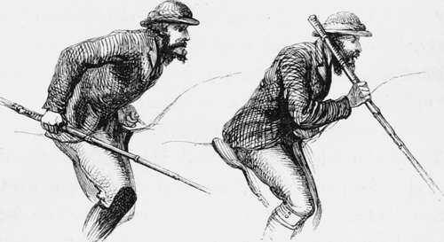

Chapter XI
Description
This section is from the book "Hog Hunting In The East, And Other Sports", by J. T. Newall. Also available from Amazon: Hog Hunting in the East, and Other Sports.
Chapter XI
A discussion on the subject of spear and spearing—Pugging—The excellence of the Cutch puggees—A fine example—The boar found, run, and lost—The Station of Bhooj—A sporting subaltern's bungalow.
There was much bustle as day dawned on the little camp. The hunters had determined to ride forth betimes, and, accompanied by their breakfast, proceed to a certain spot indicated by Natta, there to await an intimation from him that a track had been found, or such khubber as he might send. This arrangement had, moreover, the advantage of allowing the tents to be at once struck, and the equipage proceed on "its journey.
So, amid the hum of many voices not infrequently rising into tones of altercation the hammering of tent pegs, and the gurgly groanings of camels, the sportsmen mounted their horses in the early morning, and, accompanied by their syces and a few men carrying edibles and potables, moved at a quiet pace towards the rendezvous.
Natta, with his assistant shikarees, had preceded the hunters by a couple of hours, so as to get on the track of any likely boar, while the pug was yet fresh and undimmed by sun or wind,
The appointed spot was in the neighbourhood of the temples of Rhoda-Mata, and there under a tree the early jungle breakfast was discussed with a relish, healthy appetites and the bracing morning ah induced.
"Now that you have had some practice," asked Norman of the Bengalee, as they indolently puffed at their cheroots, " won't you confess that you prefer the Bombay fashion of spear, and our manner of holding and using it ?"
" Of course there is much to be said in its favour, especially in riding on open ground," was the reply. And then thinking that perhaps he had admitted too much, and not wishing unnecessarily to add to the vaunting conceit of the " Ducks," added. " You know I have not ridden much in the grass tracts of Lower Bengal, where, doubtless, a short, leaded spear, carried job-fashion, is the best, and most adapted to the country."
" But it is as much javelin as spear," said Mowbray ;
" for I understand you throw it."
" Certainly we do when in close pursuit. It is a more classical method than yours. We have Homeric authority for it. Did not Achilles pink the charging Hector with a well-aimed cast just between neck and shoulder? Many a 'well-greaved' Greek and Trojan fell in the same way."
" Ay," returned Mowbray ; " but, remember, Achilles missed his first cast. Besides, you Bengalese don't throw at charging boars, I believe ; so the classical parallel won't hold.
"Well, I could find many others from the same source. But as you say, Mowbray, we usually receive the boar with spear in hand ; only, instead of holding it as you do, like a lance, we are obliged to grasp our far shorter weapon as a javelin, that is, with fingers uppermost, and job down as the boar comes within reach."
" I suppose, though," said Norman, " as you have such a weight of lead at the end, and are therefore able to grasp the spear far back, you have almost as much in front of the hand as we have who hold it more in the centre for the sake of balance."
" Reckoning your spear to be nine feet or so in length, and ours about six, I should fancy there could not be very much difference. It is the way of using it in which lies the advantage or disadvantage, whichever it may be. It seems to me a safer method of carrying the spear with the blade down, and pointing to the ground."
" It may be so," was the reply, " especially with tyros. It must also, I conceive, be more easily brought into action on a sudden emergency, such as must often occur in riding through grass, and be more manageable when thrusting over the bridle-hand, if a boar happen to charge on that side. Still, for thrusting generally, and especially in charges, and for most purposes, indeed, I greatly prefer our method, which I think has been adopted in the north of India, and has been always in use in Madras. It is certainly more suited to open ground."
Modes of handling the spear.
" I saw some engravings the other day," said Danvers, "representing the sport of pig-sticking. Most wonderful boars, certainly, they were in appearance, though an unusual fault in depicting animals in 1 Indian sporting scenes far too small. The riders were represented as having spears of something like a dozen feet in length, which they carried fixed to the side under the arm, in rest. I have certainly seen a few men do so, especially when new to the work ; but most of us, I believe, carry our weapons loose, with a light and easy play of the wrist, so as to be able to draw the hand back and thrust, instead of making the spear a fixed engine, held firm under the arm with the elbow pressed to the side. The latter must sometimes be very awkward, and apt to lift a man out of his saddle should he strike the ground, a very probable contingency. I never carry my spear so myself under any circumstances.""*
" Nor I," " Nor I," reiterated several others of the party, just as old Natta approached the group, and with a salaam, made with a flourish and kick back of one leg, intended as a salute for the company generally, stood waiting to be questioned.
Those who yet lingered over their breakfasts hurried to finish, for the old man reported that he had come across the track of a very fine boar, which he thought might be harboured in a woody nullah just opposite the Ehoda temples, occasionally a favourite resort of pig. Thither he had sent the other puggees to ascertain, and requested that the sahibs would at once mount and accompany him.
Little time was lost in acting on this recommen-elation, and the party was soon en route along the bank of the river to the place in question. It was a gully which cut through a low ridge, there forming a natural bank to the river. Within a brief distance was a ravine wdiose sides, for the most part precipitous, formed an extremely awkward place to come across at full gallop. So clean was the channel cut away that, till closely approached, the yawning gulf was undiseoverable. Beyond the gorge, towards the higher hills, the country consisted at first of fair ground, studded with bushes, but afterwards became broken, irregular, and rough. Bits of level there were, but scant of vegetation, and well garnished with rock and stones, and seamed by various deep nullahs and ravines. It gradually rose towards the spurs of the hills, which were very rugged, and presented most difficult riding-ground.
Continue to: